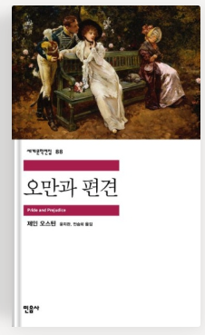
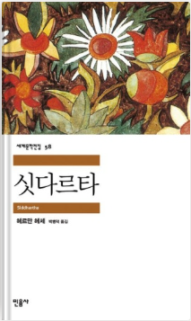

시대를 넘어 오래 읽혀 온 고전 두 권입니다.

민음사 세계문학전집 88
| 저자 | 제인 오스틴 |
|---|---|
| 옮긴이 | 윤지관, 전승희 (민음사) |
| 출간 | 1813년, 영국 |
| 분야 | 고전 소설 · 로맨스 |
결혼이 곧 생계였던 19세기 영국에서, 엘리자베스는 조건보다 자기 마음을 따르겠다고 말하는 인물입니다. 그녀가 다아시를 오해했다가 조금씩 진짜 모습을 알아가는 과정을 따라가다 보면, 사람을 판단할 때 내가 얼마나 첫인상에 기대고 있는지 돌아보게 됩니다.
고전이라 어려울 것 같지만, 등장인물들의 대화가 재치 있고 풍자가 많아 생각보다 술술 읽힙니다. 책을 다 읽은 뒤 2005년 영화(키라 나이틀리 주연)로 다시 만나 보는 것도 추천합니다.

민음사 세계문학전집 58
| 저자 | 헤르만 헤세 |
|---|---|
| 옮긴이 | 박병덕 (민음사) |
| 출간 | 1922년, 독일 |
| 분야 | 고전 소설 · 성장 소설 |
모든 것을 갖춘 브라만의 아들 싯다르타가 진정한 자신을 찾기 위해 집을 떠나, 수행자의 삶과 세속의 삶을 모두 거친 뒤 마침내 강가에서 깨달음을 얻는 이야기입니다.
늘 올바른 방향으로 나아가야 한다고 생각했지만, 때로는 방황하고 돌아가는 시간조차 삶의 중요한 일부라는 것이 이 책에서 가장 큰 메시지로 느껴졌습니다. 모든 경험이 결국 나를 만들어 가는 과정이라는 점에서 위로와 여운을 주는 책입니다. 스스로에 대한 고민이 많을 때 추천드립니다.